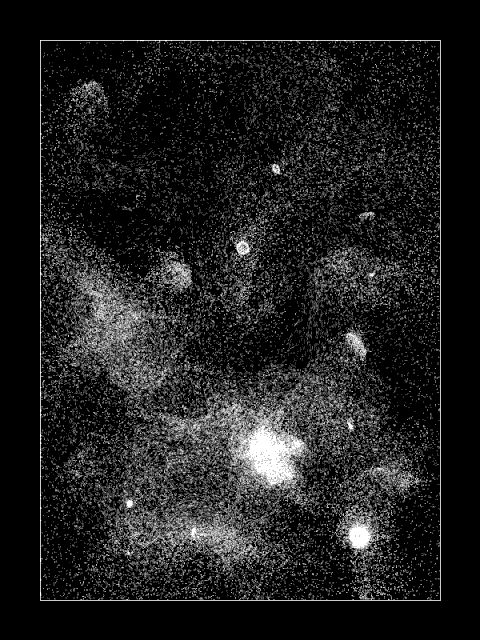

This tutorial is about generating this kind of gif :

This is a variant of the previous flow field tutorial, so make sure to check it out first.
The difference with flow fields is that here the vector field will be used to accelerate the particles. It will be an acceleration field instead of speed field. Particles will keep their inertia and now trajectories can cross. To avoid particles going too fast, a coefficient is used to slow down the speed at each time step.
Here are the only changes from the flow field algorithm :
// slowdown coefficient on speed
float slowdown = 0.93;
initial speed for each path :
// initial speed
float vx = 0;
float vy = 0;
new "update" method to Path :
void update(){
PVector res = field(x,y);
vx += DT*res.x;
vy += DT*res.y;
vx *= slowdown;
vy *= slowdown;
x += DT*vx;
y += DT*vy;
positions.add(new PVector(x,y));
}
If you decrease the "slowdown" coefficient particles will go slower and follow the field more like a speed field than acceleration field.
Here is the code to get the following example of result :

It uses this vector field :
float curvex(float q){
return cos(q);
}
float curvey(float q){
return sin(q);
}
PVector field(float x,float y){
float amount = 30;
float scl = 0.004;
float ns = 50*noise(100+scl*x,100+scl*y);
float fx = amount*curvex(ns);
float fy = amount*curvey(ns);
return new PVector(fx,fy);
}
The example in the beginning of the tutorial uses a field that uses centers, its code is here.
I hope you found this helpful and that you will come up with nice gifs. Please don't hesitate to ask questions or suggest improvements.